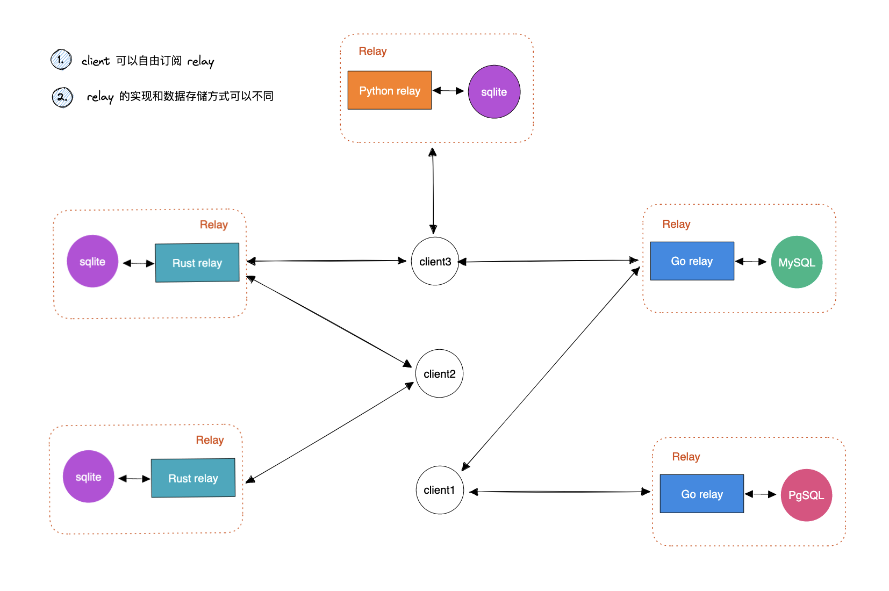

Nostr 协议详解（科普篇）
1. 关于 nostr
nostr 是一个分布式的网络，但是很特别的是，这个网络不是 p2p 网络，也没有用到区块链技术，仅仅使用了公私钥体系。基本结构如下：

nostr 网络中目前只有两个角色 relay 和 client。每一个节点被称之为 relay（中继服务器），普通用户是 client。由于没有实现 p2p 协议，每个 relay 之间并不会同步消息，每个 relay 都有自己的数据库存储，数据库的类型可以自行决定，目前用的比较多的是 sqlite 或者 Postgresql，其他的类的数据库也可以，要看 relay 的具体实现。
每个人使用的终端是 client，client 会和 relay 之间进行交互，使用 websocket + json 协议。
从 client 到 relay 支持三种操作:
- EVENT: 发布 event，发布消息、修改个人简介等等
- REQ：搜索数据、订阅 relay 的新信息，比如你关注的用户发布了信息，就可以通过这个请求获取到
- CLOSE：关闭 REQ 操作中的订阅
从 relay 到 client 支持两种操作：
- EVENT: 返回用户订阅的 event 信息
- NOTICE：返回可读的信息，这些信息的内容可以由 relay 自行决定
其中最重要的就是 event 这个结构，用户有任何的数据新增或者修改，都是通过 event 来发布，为了防止 event 被篡改，发出的 event 都需要使用私钥签名，client 在收到 event 时会去验证这些签名。
relay 和 client 可以自行实现。目前 relay 的实现在这里可以看到：https://github.com/aljazceru/awesome-nostr。
client 实现中比较流行的有 Damus 和 snostr.social，在这里可以看到全部的 client 实现：https://github.com/vishalxl/Nostr-Clients-Features-List/blob/main/Readme.md。
总体来说，nostr 协议很简单，完整的协议可以在这里看到（https://github.com/nostr-protocol/nips），每一条协议都被称之为 nip，比如 nip-01 中就定义了 event 的基本结构。relay 和 client 的实现也很简单，一个 relay 的实现甚至只需要几千行代码。
2. 核心数据结构 event
event 的扩展性很强，可以定义各类的消息类型，目前已经定义的类型如下，后续还可以不断扩展。
- 0 set_metadata: 设置用户的元数据，比如用户名，头像等等
- 1 text_note: 发布的消息，类似 twitter 的推文
- 2 recommend_server: 消息发布者推荐的一些中继服务器
- 3 contract_list: 当前用户的关注者列表
- 4 encrypted_direct_message: 加密消息
- 5 deletion: 删除消息
- 7 reactions: 点赞或者转发
- 40~44 public chat: 公共频道或者群聊
- 22242 auth: relay 和 client 之间的鉴权
用户在发布消息时，都需要指定以上的一种类型，relay 会按照用户发送的类型来处理消息。可以这样来理解，只要是需要 relay 存储的信息，都必须是一个 event。
3. nostr 的数据传播
nostr 的目标就是创建一个完全去中心化的网络，它认为 twitter 的限制太多，比如广告太多、让人沉迷的信息流、可以随意封禁用户，它也认为 Mastodon 等协议太过于依赖第三方。所以 nostr 要让每个 relay、甚至每个用户自己来控制自己的数据。client 可以将消息发布到任意的 relay，由于消息都经过了签名，relay 无法篡改这些消息，所以也不需要关心 relay 是否是可信的。
在 nostr 中，如果一个 relay 把你封禁了，你也可以转发到其他的 relay。即使你是一个发布垃圾信息的人，也可以创建自己的 relay，然后发布消息，至于这些消息会不会被其他的 relay 和 client 抵制就是另外一回事了。
目前在 nostr 上发布一些文本量类的轻量级内容体验还可以，但是对于一些视频或者其他很重的内容，目前 nostr 支持的不好，这一点后续需要通过市场激励的方式来解决。
在 nostr 中，有一个很重要的问题需要解决，由于 relay 之间不同步数据，那么数据要怎么在整个网络中同步呢？nostr 的设计很巧妙，每个 relay 之间不同步消息，同步消息的机制由 client 来实现。client 通过发送 2、3 类型的 event， 可以把自己知道的用户及相关的 relay 地址传播到其他的 relay 中。这样其他的用户就可以通过这些信息找到目标用户的 relay，拉取到目标用户的消息，从而完成信息的传播。
这样做的好处在于每个 relay 不需要像区块链节点那样存储全量的数据。nostr 的这种数据存储方式类似于数据库分片，让每个 relay 的存储压力不那么大。当然这样做也有坏处，如果用户的消息只在某一个 relay 上，如果这个 relay 出现问题，就有可能导致数据永久丢失。
4. 怎么防止垃圾信息
在 nip-13 中， 定义了 pow 机制来增加发送垃圾消息的成本，但这样应该还不足以拦截垃圾信息。
在这个问题上，有另外一个思路，由于 relay 和 client 实现上的自由度很高，relay 和 client 可以自行决定可以传播什么样的信息，对哪些信息进行拦截，对一些恶意用户设置黑名单，然后在 relay 之间分享。
这样可以让 nostr 形成各种类型的社区，每个社区都有自己的规则，那些任由垃圾消息传播的社区会成为垃圾场，有着良好规则和优质内容的社区就会越来越庞大。
5. 关于 nostr 的未来
在 nostr 中，还有很重要的一个特性，可以很方便的集成闪电网络。目前用户可以在 client 上使用闪电网络进行转账，甚至有了一些实用性的功能，比如购买 nip-05 的认证。
对于闪电网络，还有更多的想象空间，比如在 twitter 上，任何人都可以给你发私信（DM），在 nostr 上，可以设置陌生人给你发私信时需要支付一些小额的比特币，从而屏蔽掉很多干扰。
当然 nostr 目前来看还是很粗糙，存在各种 bug，体验也比较差；基于公私钥机制，也解决不了账号丢失的问题。不过只要 nostr 有足够的生命力，这些都是可以被解决的。
参考链接：
[1] https://github.com/nostr-protocol/nips
[2] https://github.com/nostr-protocol/nostr
[3] https://github.com/vishalxl/Nostr-Clients-Features-List/blob/main/Readme.md